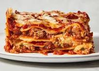

lasagnaaaaa!!!

- Meat: This super meaty lasagna has sweet Italian sausage and lean ground beef.
- Onion and garlic: An onion and two cloves of garlic are cooked with the meat to add tons of flavor.
- Tomato products: You'll need a can of crushed tomatoes, two cans of tomato sauce, and two cans of tomato paste.
- Sugar: Two tablespoons of white sugar add subtle sweetness and enhance the flavor of the sauce.
- Spices and seasonings: This lasagna recipe is flavored with fresh parsley, dried basil leaves, salt, Italian seasoning, fennel seeds, and black pepper.